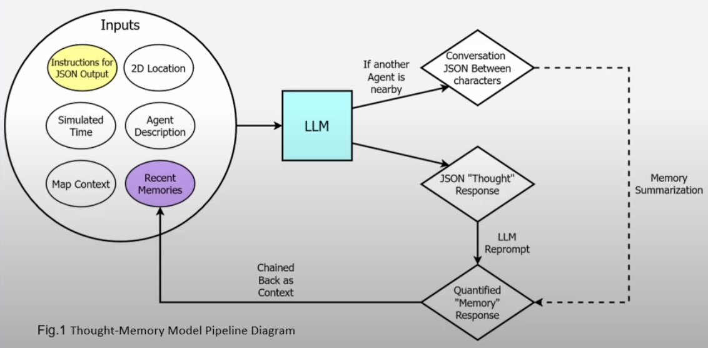

Nicholas Hodge, Greyson Paschall, Josue Sandoval
Thought-Memory diagram for project
Large Language Models or LLMs have become a major trend in the past few years as they have displayed their capabilities to accurately generate the English language and carry out specific tasks when given a pure text request. In this project, we have leveraged these capabilities to develop an interactive 2D GUI. This project is an environment with multiple LLM-based agents that display interactions which form relationships and memories.